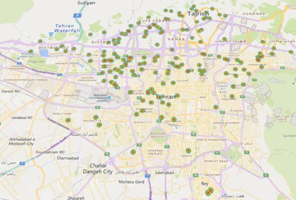

یه سری محصول هست که وقتی میخوای بخری، مسئله دیگه قیمت نیست؛ مسئله اینه که اصلاً پیداش میکنی یا نه. گلمحمدی معینیپور یکی از همونهاست.
حالا سوپرمارکت اسنپ برای هر فروشگاه، لیست کامل محصولاتش رو داره. یعنی من میتونم برعکسِ کاری که همه میکنن عمل کنم: بهجای اینکه دنبال فروشگاه بگردم، دنبال محصول بگردم و ببینم کدوم فروشگاهها دارنش. اطلاعات فروشگاههای تهران رو جمع کردم و بعد هر کدوم که این محصول رو داشتن، روی نقشه گذاشتم.

یه نکتهای که خودم انتظارش رو نداشتم این بود که پخش نقاط اصلاً یکنواخت نیست. یعنی محصول در بعضی مناطق تقریباً همهجا هست و در بعضی مناطق اصلاً نیست.
لازم به ذکر است، آدرس دقیق سوپرمارکتها به فروش میرسد 😂
این کار را اول در کانال تلگرام و توییت گذاشتم؛ این نوشته همان است، کمی کاملتر.
nb.neighbours()
| title | date | |
|---|---|---|
| prev | خانهکاوی در دیوار! | ۱۴۰۱/۱۲ |
| next | ۶۳ میلیون ثانیه اتلاف عمر | ۱۴۰۲/۰۵ |